The most common reason analysts get confused is capturing at the wrong location — thousands of irrelevant packets swamp the trace. When Client A is complaining about reaching Server A, where do you place Wireshark first, and why does it matter whether the problem is client-side vs. along the path?
Know Where to Tap Into the Network
The most common reason people avoid analyzing network traffic is total confusion at the hundreds of thousands of packets whizzing by — the classic "Needle in the Haystack" problem. Placing the analyzer at the right spot is just as important as applying the right filters and interpreting traffic correctly.
Given a large enterprise network with numerous users complaining about performance, begin by placing your analyzer as close to the complaining client as possible. By capturing at this location you can measure round-trip time and identify packet loss from the client's perspective. If you find packet loss, move Wireshark closer to the server until you find the location where packets are being dropped.

Run Wireshark Locally
One option is to run Wireshark or Tshark directly on the system you want to capture traffic to or from. Since Wireshark runs on most operating systems this is simple, but it is not used often because of the need to bypass security measures to install Wireshark on the user machine and the hesitation to load another application on a server.
Portable Wireshark
Portable Wireshark can be installed onto a PortableApps-enabled device — letting you run Wireshark on a host without installing it. Download from portableapps.com. The host still must have WinPcap installed; if Wireshark doesn't detect WinPcap it will attempt to install it. You can suppress this by setting DisableWinPcapInstall=true in the wiresharkportable.ini file.

Install the PortableApps Suite on a USB stick, then visit wireshark.org/download.html and select Windows PortableApps (32-bit). Run the executable — a wizard installs the package in the PortableApps\WiresharkPortable directory. When you launch startportableapps.exe, the Wireshark menu item appears as shown in Figure 63.

U3 Devices: U3 smart drives use the U3 Launchpad to auto-launch applications on recent Windows systems. This is another method for running Wireshark without a full installation.
Traffic Visible on a Switched Network by Default
When you connect Wireshark to a switch port, you will only see up to four types of traffic by default:
- Broadcast traffic
- Multicast traffic (if forwarded by the switch)
- Traffic to and from your own hardware address
- Traffic to an unknown hardware address
Traffic from one device flows directly to its destination switch port. Client A's traffic is not sent down any other switch ports on Switch A — the switch is doing exactly what it should, isolating conversations based on hardware addresses.
There are four main methods for capturing other hosts' traffic on a switched network: hub, tap, SPAN port, and local install. What does each sacrifice for what it gains? Which is best for capturing physical-layer errors like CRC failures?
Capture Traffic on Switched Networks
Use a Simple Hub on Half-Duplex Networks
Standard hubs can monitor half-duplex network traffic by connecting the hub in-line between half-duplex devices. Hubs forward bits arriving on one port out all other ports. However, placing a half-duplex hub into a full-duplex environment creates a mismatch that causes serious communication problems — never use a hub in a full-duplex shop.
Before using a hub to monitor half-duplex traffic, test it: connect two half-duplex test stations and Wireshark to the hub. Ping one test station from the other. If Wireshark sees the ping traffic, it is a real hub. If not, it is likely a switch sold as a hub — do not use it for monitoring.
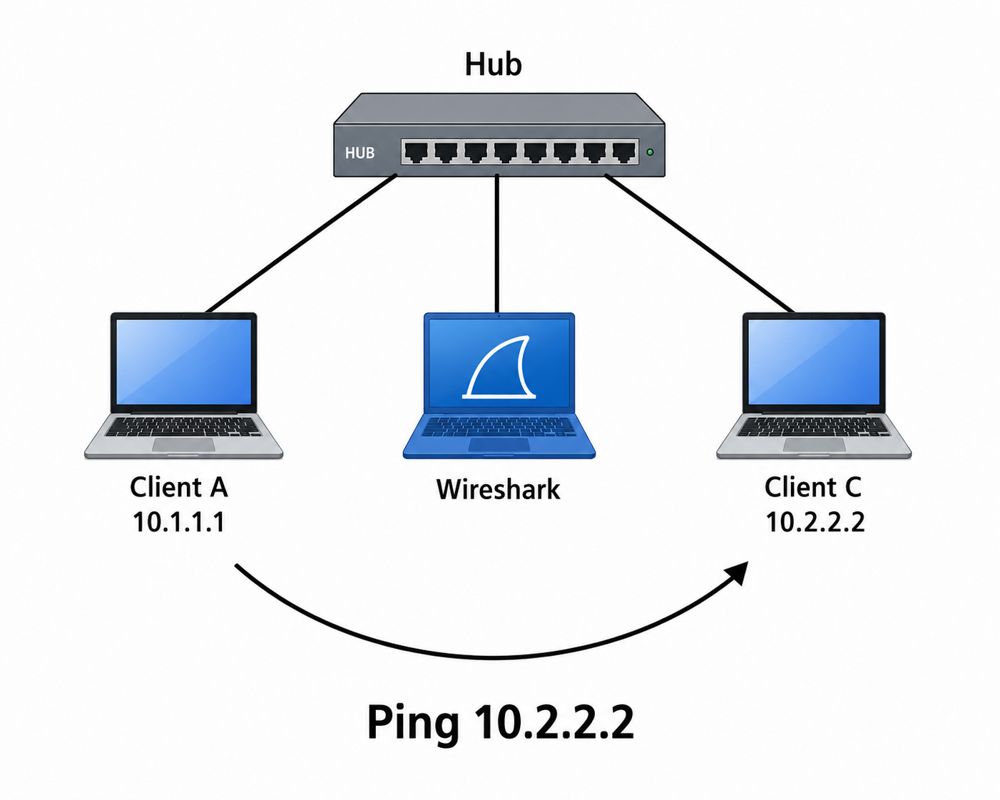
Use a Test Access Port (TAP) on Full-Duplex Networks
Network taps can be used on half and full-duplex networks to listen in on traffic between a client or server and a switch or router. Taps are passive devices placed in-line (in the path) between devices. Unlike SPAN ports, taps can forward packets that contain physical-layer errors (such as CRC errors) to the monitor port(s). Taps do not introduce delays or alter traffic contents, and they should "fail open" so they will not disrupt traffic if power is lost.
Non-Aggregating Taps pass full-duplex communications out two separate ports. A device running Wireshark requires two network interface cards to receive traffic from the two monitor ports. Wireshark can be configured to capture on both interfaces simultaneously, or two separate Wireshark systems can each connect to one port. Use File | Merge or Mergecap to combine the separate trace files.
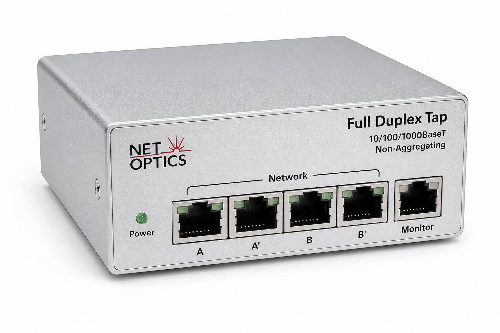
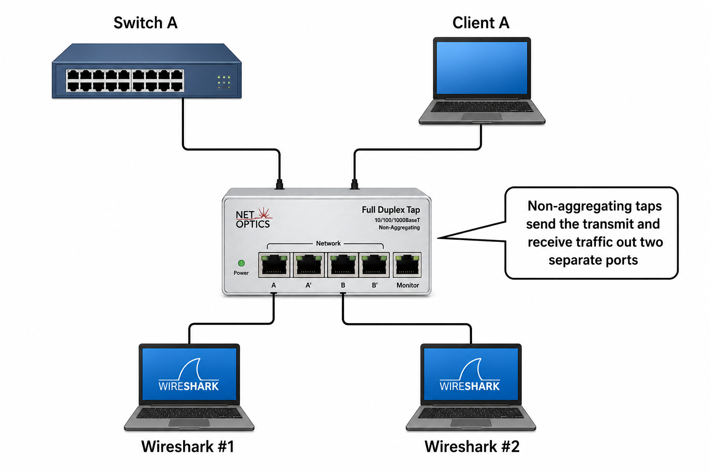
Aggregating Taps combine bidirectional traffic into a single outbound port. A single NIC Wireshark system can connect to the aggregating tap to listen in on full-duplex communications. Tap port A connects to a server, tap port B connects to a switch, and tap port A/B goes to your Wireshark system.

Regenerating Taps are used when you have more than one monitoring tool. For example, analyzing with Wireshark while simultaneously running intrusion detection with Snort or Suricata. Regenerating taps have more than one outbound port, allowing connection of two or more monitoring devices.

Link Aggregation Taps are used when you have more than one link to monitor (e.g., two separate servers). Instead of multiple taps, a single link aggregation tap connects to both servers and combines the traffic streams into one or more monitoring ports.
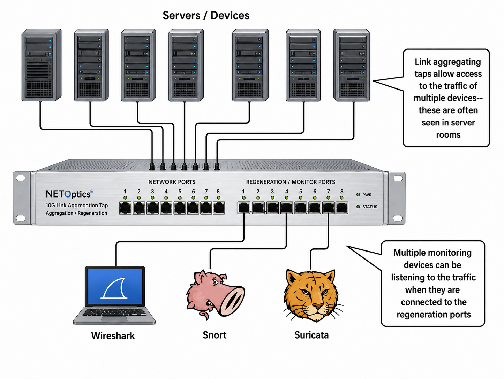
Intelligent Taps can make decisions on inbound traffic, provide timestamps for each packet, filter packets, and more. Features vary by solution (e.g., Net Optics — www.netoptics.com).
Analyzer Agents are software programs loaded on switches to capture traffic from all ports and send data to a management console. This enables managing switched traffic from a central location, though proprietary lock-in or cost can be limiting factors.
Set Up Port Spanning / Port Mirroring on a Switch
Port spanning (also called port mirroring, or SPAN — Switched Port ANalysis) configures a switch to send a copy of any port's traffic to a monitor port where Wireshark is connected. This is only possible if the switch supports the functionality.
| SPAN Term | Definition |
|---|---|
| Source SPAN Port | The port being monitored (e.g., port 4 in Figure 70) |
| Source SPAN VLAN | A VLAN whose traffic is monitored by the SPAN feature |
| Destination / Monitor Port | The port where Wireshark is connected (e.g., port 1 in Figure 70) |
| Ingress Traffic | Traffic flowing into the switch — some switches require you to specify ingress vs. egress |
| Egress Traffic | Traffic flowing out of the switch |

Traffic from port 4 is copied to port 1 where Wireshark is located. Example Cisco IOS SPAN commands (courtesy of Ron Nutter, Network World):
monitor session 1 source interface fa4/7 monitor session 1 destination interface fa4/1
Replace fa4/7 with the source port to monitor; replace fa4/1 with the destination port where Wireshark listens. The 1 identifies the session — multiple SPAN sessions can run simultaneously. To see all configured sessions: show monitor session all. To remove a session: no monitor session 1.
To display available interfaces for SPAN on a Cisco switch: monitor session 1 source ?
Spanning VLANs
To span VLAN traffic, span the port of a device in the VLAN. Define the destination port as the one Wireshark is connected to. To see VLAN tags, do not configure the Wireshark interface as a member of a VLAN. Whether VLAN tags appear in Wireshark depends on whether the NIC/driver passes them up to the upper layer — if handled by the card itself, the tag is stripped before Wireshark sees it.
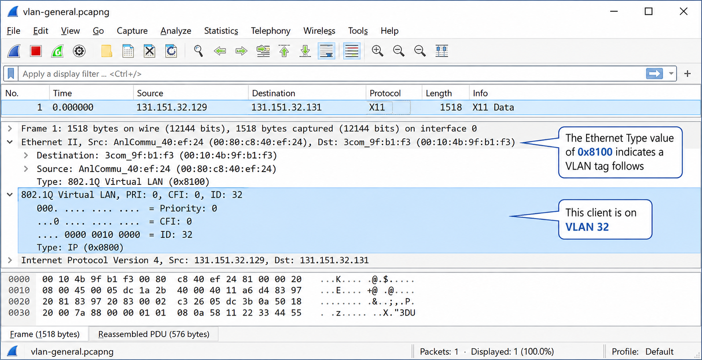
A router isolates traffic by IP address — Wireshark on one side cannot see the other. For wireless, promiscuous mode and monitor mode are not the same. Why does using a native WLAN adapter often yield misleading captures, and what does monitor mode give you that promiscuous mode alone cannot?
Analyze Routed and Wireless Networks
Routed Networks
Routers isolate traffic based on network address (IP). If you place Wireshark on one side of a router, you will only see traffic destined to or from that network. Figure 72 shows a network with three subnets (10.1.0.0, 10.2.0.0, 10.3.0.0). Traffic between clients and servers on 10.1.0.0 is not visible to Wireshark #2 on 10.2.0.0.
- Wireshark #1 — configured through port spanning to listen to the port connecting to Router A; sees traffic to/from Clients A, B, C and network 10.2.0.0
- Wireshark #2 — connected to an aggregating tap between Server B and Switch C; sees only traffic to/from Server B and local/remote networks

Analyze Wireless (WLAN) Networks
Start from the bottom and move up through the protocol stack when analyzing WLAN environments. "From the bottom" means analyzing the strength of RF signals and looking for interference first. Wireshark cannot identify unmodulated RF energy or interference — use a spectrum analyzer (e.g., MetaGeek) for that.
Wireshark's location on a wireless network follows the same placement principle as wired: start as close as possible to the complaining user. You want to learn the signal strength, packet loss rate, WLAN retry rate, and round-trip latency at the location of the user who is complaining.

Promiscuous Mode vs. Monitor Mode
Promiscuous mode enables a NIC to capture traffic addressed to other devices — but on 802.11, an adapter in promiscuous mode only captures packets from the SSID it has joined. Packets from other SSIDs are received at the radio level but not forwarded to the host.
Monitor mode (rfmon mode) passes all packets of all SSIDs from the currently selected channel up to Wireshark, without the adapter being a member of any service set. In monitor mode the adapter will not support general network communications (web browsing, email, etc.) — it only supplies received packets to the capture mechanism.
Due to Windows limitations, CACE Technologies (now Riverbed) developed AirPcap adapters — these can capture data, management, and control frames and perform multi-channel monitoring. The AirPcap aggregating adapter allows simultaneous capture on multiple AirPcap adapters (multiple channels).
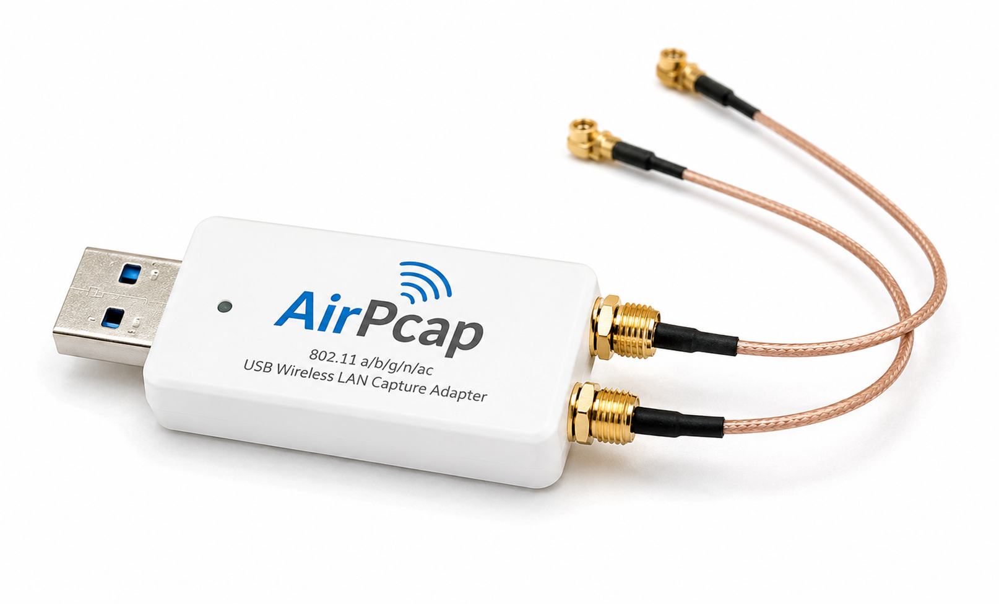
Native Adapter Capture Issues
You can capture on your native WLAN adapter as long as Wireshark lists it in the interfaces. However, native adapters often provide only data packets — management and control frames are not passed up, and the 802.11 header is replaced with a fake Ethernet II header. Your ability to analyze WLAN issues is quite limited with native adapters.
Capture at Two Locations (Dual Captures)
Two or more Wireshark systems may be required when tracking where packet loss occurs along a path. For example, set up Wireshark at the client and at the server — compare timestamps to identify exactly where delays appear. Key considerations for dual captures:
- Both analyzer systems should be time-synchronized using NTP (ntp.org)
- Use Editcap to adjust timestamps if systems are not synchronized
- Use Mergecap to combine trace files from both locations
- Apply capture filters to focus on the specific traffic stream at each location
- Apply display filters to identify the same traffic stream in each trace
The Capture Interfaces window is your first checkpoint — if your interface doesn't appear, nothing works. For remote capture, rpcapd sends raw captured packets over the network. When would you choose rpcapd over running Wireshark directly on the remote machine — and what is the key risk of rpcapd on a busy link?
Interface Selection and Remote Capture
Select the Right Capture Interface
Open the Capture Interfaces window to verify packets are being seen on the desired interface: Capture | Interfaces. If no interfaces appear, there is likely a problem with libpcap (*nix) or WinPcap/AirPcap (Windows). Try restarting Wireshark first, then restarting the system.
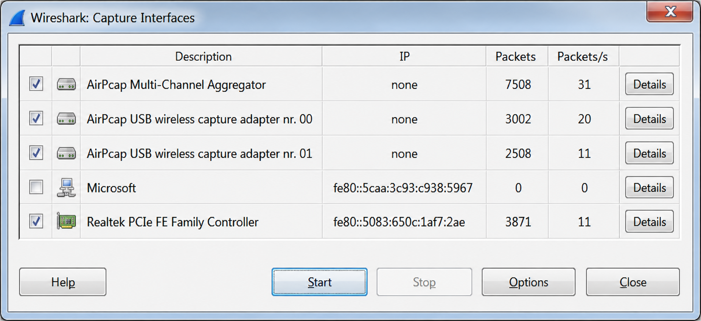
The interfaces shown in the example include: AirPcap Multi-Channel Aggregator, AirPcap adapter nr. 00 (channel 1), AirPcap adapter nr. 01 (channel 6), a native wireless adapter (not connected — no traffic), and a Realtek PCIe Ethernet adapter.
Toggle IPv4/IPv6: If Wireshark shows an IPv6 address when you prefer IPv4, click the IPv6 address in the Interface Options window to toggle the view.
Simultaneous Multiple Adapter Capture was added in Wireshark 1.8 — you can capture on multiple interfaces at once (e.g., the AirPcap aggregator and Ethernet simultaneously).
Interface Details (Windows Only)
The Interface Details window lists interface characteristics, link type, statistics, and task offload capabilities — information provided by the NIC driver.
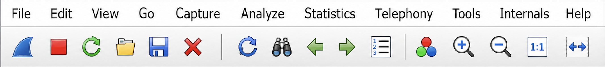
Capture Traffic Remotely
When you need to capture at a remote location but analyze locally, you have several options:
- Remote SPAN (rspan) — if your switch supports it, consult manufacturer documentation
- Remote control software — run Wireshark on the remote host and control it via UltraVNC, Logmein, Anyplace Control, etc.
- rpcapd (WinPcap) — a capture daemon included with WinPcap that captures and sends packets to a local Wireshark host
WinPcap includes rpcapd.exe, copied to the \winpcap directory during installation. Run rpcapd -n on the remote host (the -n parameter disables authentication). Then in Wireshark select Capture | Options | Manage Interfaces | Add and enter the target IP and port (default: 2002).

rpcapd -n on a remote Windows host.rpcapd parameters:
| Parameter | Description |
|---|---|
-b <address> | Address to bind to (numeric or literal). Default: all local IPv4 addresses |
-p <port> | Port to bind to. Default: 2002 |
-4 | Use only IPv4 (default: both IPv4 and IPv6) |
-l <host_list> | File listing hosts allowed to connect — one per line, use literal names to avoid address-family issues |
-n | Permit NULL authentication (usually used with -l) |
-a <host,port> | Run in active mode — rpcapd initiates connection to host:port (default port 2003) |
-v | Active mode only (default: also accepts passive connections when -a is specified) |
-d | Run as daemon (UNIX) or Windows service |
-s <file> | Save current configuration to file |
-f <file> | Load configuration from file (ignores all command-line switches) |
-h | View help screen |
Use the -l parameter to restrict which Wireshark hosts can connect. If a host is not in the <host_list> file, it receives an error response:
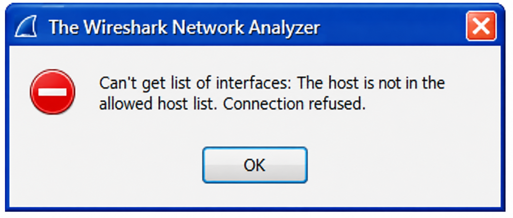
Active and Passive Mode / Save Configurations
Configure the remote capture device in Active Mode (using -a) to have the remote host initiate the connection to the Wireshark host. Port 2003 is Wireshark's listening port for rpcapd communications; port 2002 is the remote host's listening port.
Create an rpcapd.ini configuration file using the -s <file> parameter — the daemon parses all parameters used and saves them to the specified file. Example: rpcapd -a 192.168.0.105,2003 -n -s amode.txt

-s <filename> parameter to automatically save configurations to a file.-n = no auth; -l = allowed hosts file; -a = active mode; -s = save config. Remote capture adds its own traffic to the monitored link.For an overnight capture of an intermittent problem, a single huge file is impractical. Ring buffers solve storage but introduce a risk. And the Wireshark GUI itself can cause packet drops on busy links. What are the two most effective configuration changes to reduce drops — and why does Dumpcap beat Tshark for high-throughput capture?
File Management and Optimization
Automatically Save to File Sets
When capturing large amounts of traffic, save to a file set and use a ring buffer. File sets are contiguous files that can be individually opened and examined faster than one giant file. To create file sets, select Use multiple files in the Capture Options window. If you select multiple files, you must define criteria for when to create the next file.
File naming convention: If you name your capture corp01.pcapng, files are named using the stem, a 5-digit sequential number, date, and time:
corp01_00001_20120525191348.pcapng corp01_00002_20120525191848.pcapng corp01_00003_20120525192348.pcapng
Next file criteria can be based on file size (KB, MB, GB) or time (seconds, minutes, hours, days). If both criteria are selected, the first one met triggers the new file.
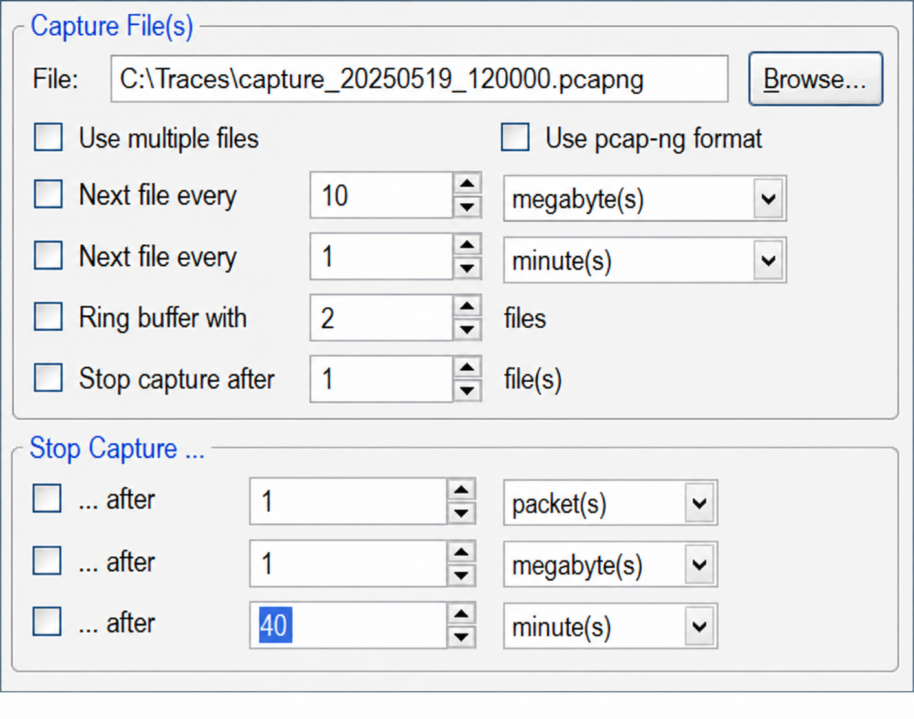
Ring Buffer
A ring buffer limits the number of files saved and prevents filling a hard drive during unattended captures. Example: a ring buffer of 2 saves only the last 2 files in the set, maintaining sequential numbering. If the entire capture creates 90 files, only the last 2 are retained.
Define Automatic Stop Criteria
Stop criteria can be based on number of files created, number of packets captured, captured file size, or time elapsed. In Figure 80, Wireshark stops capturing after 40 minutes with a ring buffer of 2 files.
Optimize Wireshark to Avoid Dropping Packets
If capturing on a very busy network, optimize to avoid drops. Dropped packets appear in the Wireshark Status Bar. Any configuration consuming extra processing power should be evaluated for disabling.
First: shut down other applications. Running a virus scan while capturing on a busy link will cause drops.
Capture options that improve efficiency:
- Disable Update List of Packets in Real Time (default: enabled)
- Disable Network Name Resolution (default: disabled — keep it disabled)
- Capture to file sets (consider 50 MB a good top trace file size)
- Increase the buffer size in Capture Options (Windows only; default: 1 MB)
Display options that improve efficiency:
- Reduce the number of columns in the Packet List pane
- Disable coloring rules (default: enabled)
- Disable unnecessary protocol tasks (e.g., disable TCP reassembly if not needed)
Dedicated Analyzer Laptop: Having one machine exclusively for network analysis avoids the pitfalls of "one laptop for all needs." Even an inexpensive netbook works well — lightweight, small, with an RJ-45 port. Consider 3 USB ports, 160 GB drive, 1 GB RAM as a minimum configuration.
Remove Duplicate Packets
Some VPN client programs (e.g., Global VPN Client) cause duplicate packets to appear — you'll see SYN-SYN-SYN/ACK-ACK-ACK for a three-way handshake instead of SYN-SYN/ACK-ACK. Use Editcap with the -d parameter to remove duplicates:
editcap -d input.pcapng output.pcapng
See wiki.wireshark.org/CaptureSetup/InterferingSoftware for a list of other interfering programs.
Command-Line Capture: Tshark vs. Dumpcap
Three command-line capture tools ship with Wireshark:
- Tshark — greatest flexibility, more parameters, but uses more resources. Tshark relies on Dumpcap internally, so both processes launch when Tshark runs.
- Dumpcap — minimal memory footprint, best for high-speed captures where the GUI cannot keep up
- Rawshark — reads raw captured packet data
| Tool | Private Working Set Memory |
|---|---|
| Dumpcap | ~3,572 KB |
| Tshark (Dumpcap + Tshark) | ~3,540 KB + ~39,800 KB ≈ 43 MB |
If memory and performance are critical, use Dumpcap. If functionality and flexibility are most important, use Tshark. Also consider tcpdump (not included with Wireshark; www.tcpdump.org) as an alternative.
Understand Checksum Errors on Your Own Traffic
If each outbound packet from your own host shows checksum errors but responses arrive and communications work fine, your NIC/driver is using checksum offloading (task offloading) — checksums are calculated on the card after Wireshark has already obtained a copy of the outbound packet, so Wireshark sees a packet with an uncalculated (incorrect) checksum. Fix: disable the Checksum Error coloring rule, or disable checksum validation in protocol preferences.
Case Studies
Our client was complaining about performance when downloading files from Server B. When analyzing traffic close to Client A, we noticed a significant delay before each file arrived at the client.
We decided to capture at both the client and the server to compare traffic flows at both locations. Wireshark #1 was connected to a spanned port listening to traffic to/from Client A. Wireshark #2 was connected to an aggregating tap listening to traffic to and from Server B.
The analyst merged the trace files. Upon doing so, the trace contained duplicate packets throughout. Comparing timestamps on the duplicate packets revealed that packets containing file requests were delayed, whereas ACK packets were not delayed.
The next step was to move Wireshark #1 along the path toward the server to identify the point where delays were incurred. The culprit was Router B — statistics at that router showed a large number of packets in queue. Working with the vendor, several configuration errors were identified: high priority queuing had been given to all traffic destined to Server A and low priority to all traffic to Server B. After reconfiguring the router, performance returned to normal.
Although Wireshark identified the location where the problem occurred, it could not identify the cause. Cooperation with IT members responsible for the devices along the path is imperative to identify the actual reason the problem occurred.
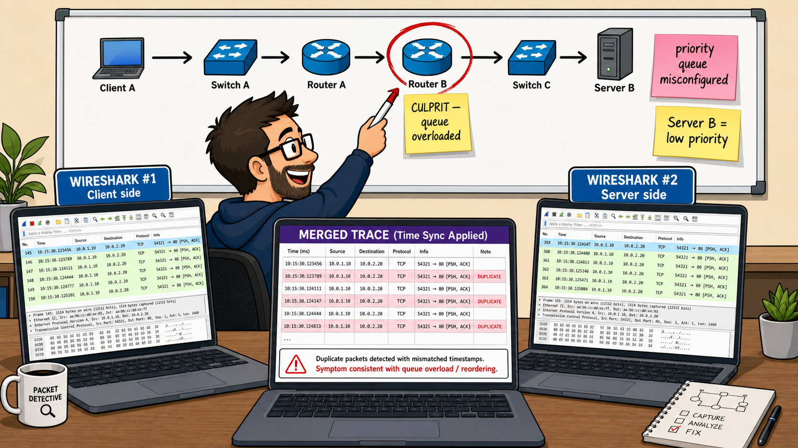
Several years ago my first broadband internet modem gave me trouble — every 15 minutes my connection was closed, causing all sorts of errors on my PC. According to the internet provider's remote diagnostics, there was nothing wrong with the modem.
Even after reinstalling Windows, using different PCs, removing the wireless router, and making a wired connection, the problem remained. I then used an Ethernet tap to check the network traffic between the modem and my provider, with my wife's PC running Wireshark to intercept the traffic.
It turned out that the modem closed the connection regularly, apparently because it thought it was using a dial-up line which it disconnected automatically if there was no network traffic for 1 minute — to "save on telephone costs." But the modem was not configured to do that — I had a fixed-fee line. Apparently I had run into a firmware bug where it ignored the fixed-line setting.
After reinstalling the modem's firmware, everything worked fine. If it wasn't for Wireshark, I would have believed the modem's webpage showing it was configured for a fixed line, while it actually ignored that configuration setting.
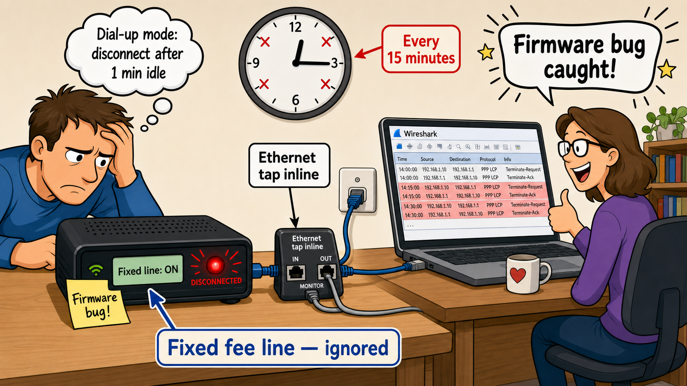
You can't analyze what you didn't capture — and you can't capture what you can't see. Start as close to the complaining client as possible, then move toward the server when you find packet loss. On switched networks, choose the right technique: tap (passive, all errors, needs physical access), SPAN (software-only, no errors, needs switch admin), hub (collisions, half-duplex only), or local install. For WLAN, use monitor mode — promiscuous mode alone only sees your associated SSID. Remote capture via rpcapd works when Wireshark can't be installed, but adds traffic to the monitored link. Save to ring-buffer file sets for long captures. Use Dumpcap instead of the GUI on busy links to minimize drops.